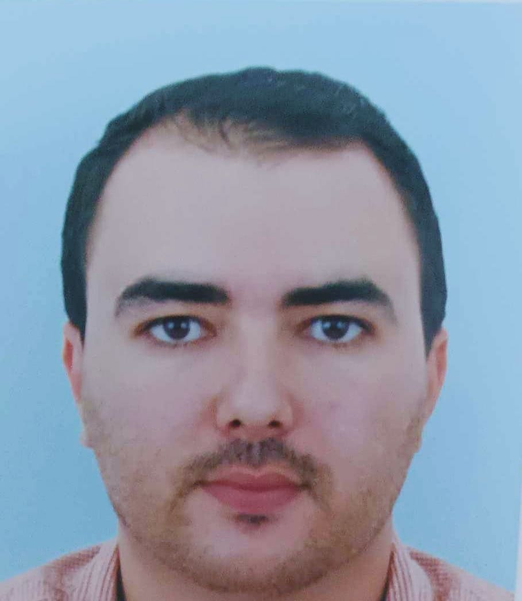
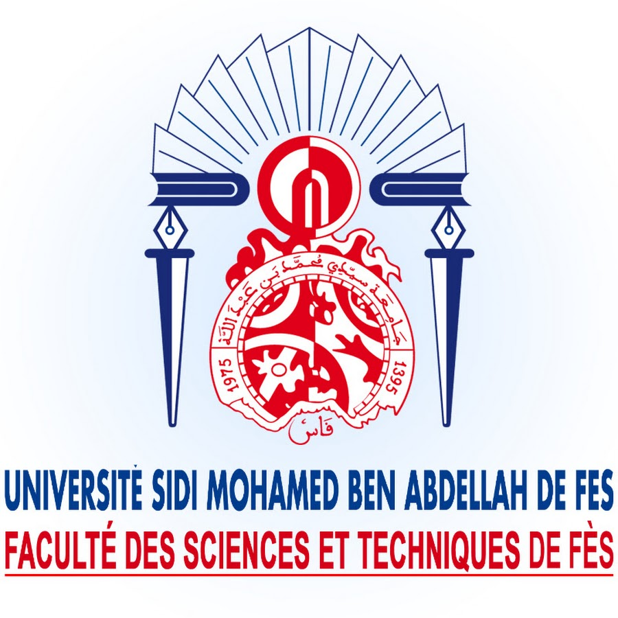

Accédez à vos ressources pédagogiques et suivez l'actualité de nos modules.
Le Pr. Mahmoud El Ahmadi est enseignant-chercheur au Département de Mathématiques de la Faculté des Sciences et Techniques (FST) de Fès. Ses activités académiques se concentrent sur l’Analyse Non Linéaire, avec une expertise spécifique portée sur l'étude des équations aux dérivées partielles (EDP) et des équations différentielles.
Affilié au Laboratoire de Modélisation et Structures Mathématiques (LMSM), il mène des recherches théoriques et qualitatives sur des problèmes complexes issus des mathématiques appliquées et des sciences de l’ingénieur, privilégiant l'approche par modélisation mathématique.
Cette plateforme académique est dédiée à la diffusion de ressources pédagogiques (Cours, Travaux Dirigés et Annales d’Examens) à destination des étudiants de Licence et de Master. Elle a pour vocation de soutenir la formation universitaire, de favoriser l’autonomie intellectuelle des étudiants et de garantir un accès structuré et pérenne aux documents scientifiques de référence.